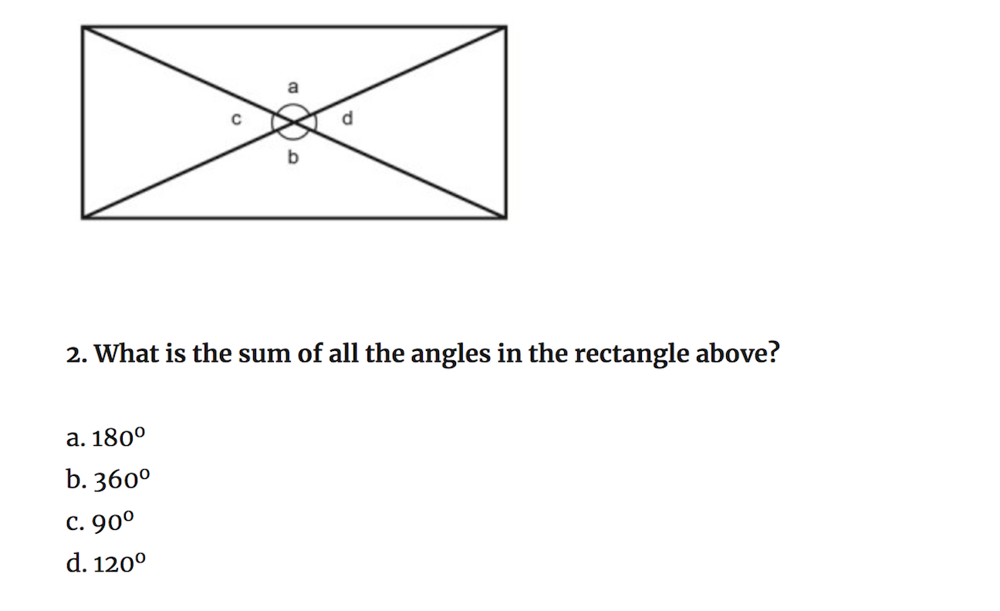
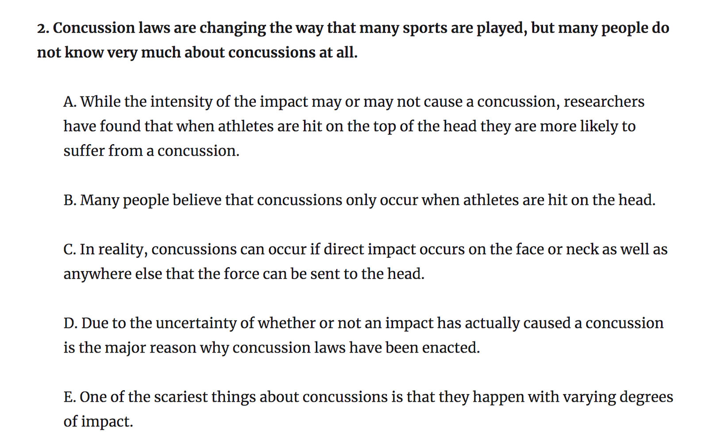
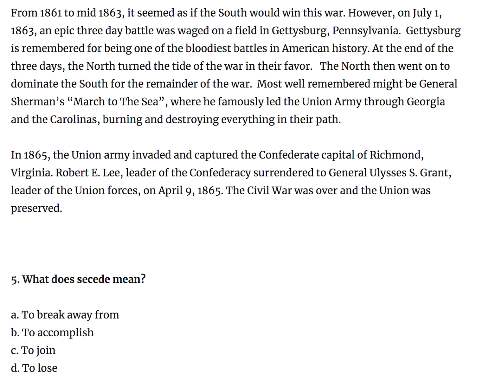
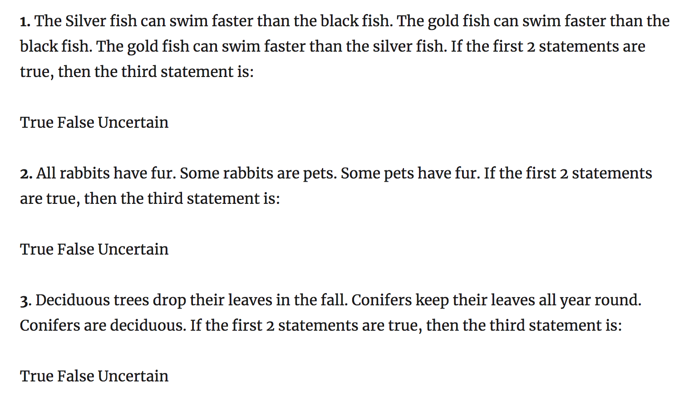

Designed to help students focus on a single subject or numerous subjects, SpecialX offers the following courses. If you are interested in any course or have questions, contact us! Rates listed below are monthly. If you are interested in two or three weeks, rates can be adjusted accordingly. For a limited time, choose ANY TWO courses for just $600!
SpecialX's comprehensive and intensive SHSAT prep course is guaranteed to improve students' scores in just four weeks! Focused on mathematics, grammar, critical thinking, and logic, this course will equip students with all the test-taking strategies and information they need to succeed on the SHSAT.
If you or your student is not sure where to get started, we recommend taking this course to get an equal boost in preparing for all the sections in just four weeks. Our tutors will run a diagnostic to check students' progress in each of the sections before developing a targetted curriculum for them. This targeted curriculum will be divided into teaching and practicing. As students learn content, they will also apply and test their skills regularly to gain confidence with concepts.
This course will cover the following concepts as they commonly feature on the SHSAT:
If you are afraid of the SHSAT's tricky Math problems, hone your skills through this package! This Course helps you focus on tackling and learning the concepts and problems that commonly get the best of students in just four weeks! This Course will help students perfect mathematics topics such as geometry, algebra, probability, fractions, graphs, measurement problems, and logic. Along with teaching and refreshing concepts, our tutors also encourage students to practice and take mock-tests of the Mathematics section so they become comfortable with test-taking as well as the material.
Sample Question:
 sourceIf you had trouble answering any of these questions and would like to learn how to approach such questions using a systematic approach, contact us today!
The SHSAT tests students on grammar topics such as sentence structure, sentence improvement and word-usage. This course teaches students how to break down such questions and offers them strategies on finding the best-fitting option. long with teaching and refreshing concepts, our tutors also encourage students to practice and take mock-tests of the Grammar section so they become comfortable with test-taking as well as the material.
Sample Question:
 sourceOften a highly challening section for test-takers, the Critical Thinking portion of the SHSAT tests students'reading and interpretation skills. Long passages and convulted wording can often trick students. However, with the SpecialX Critical Thinking Course, students will learn how to approach and dissect passages in a strcutured manner. Our tutors will prepare students with several reading tricks to see what strategy works best. long with teaching and refreshing concepts, our tutors also encourage students to practice and take mock-tests of the Critical Thinking section so they become comfortable with test-taking as well as the material.
Sample Question:
 sourceHighly abstract, these types of questions may confuse many students. With Special X's Logic Course, students will gain repeated practice with such questions and see emerging trends so they develop a structured approach to ambigious problems. long with teaching and refreshing concepts, our tutors also encourage students to practice and take mock-tests of the Logic section so they become comfortable with test-taking as well as the material.
Sample Question:
 source